library(sf)
library(terra)
library(tidyverse)
library(caret)
library(CAST)
library(mapview)sPlotOpen Worldclim Modelling
Input
# 1. plots with response
# 2. predictors
# 3. model domain (country borders)
# 4. predictor names
# 5. response name
plots = st_read("data/plots.gpkg", quiet = TRUE)
predictors = rast("data/predictors.tif")
modeldomain = st_read("data/modeldomain.gpkg", quiet = TRUE)
predictor_names = names(predictors)
response_name = "Species_richness"Preparations
training_data = plots |> st_drop_geometry()
knn_setup = CAST::knndm(tpoints = st_transform(plots, 4326),
modeldomain = st_transform(modeldomain, 4326),
samplesize = 4000, k = 5)plots$fold = knn_setup$clusters
plot(knn_setup)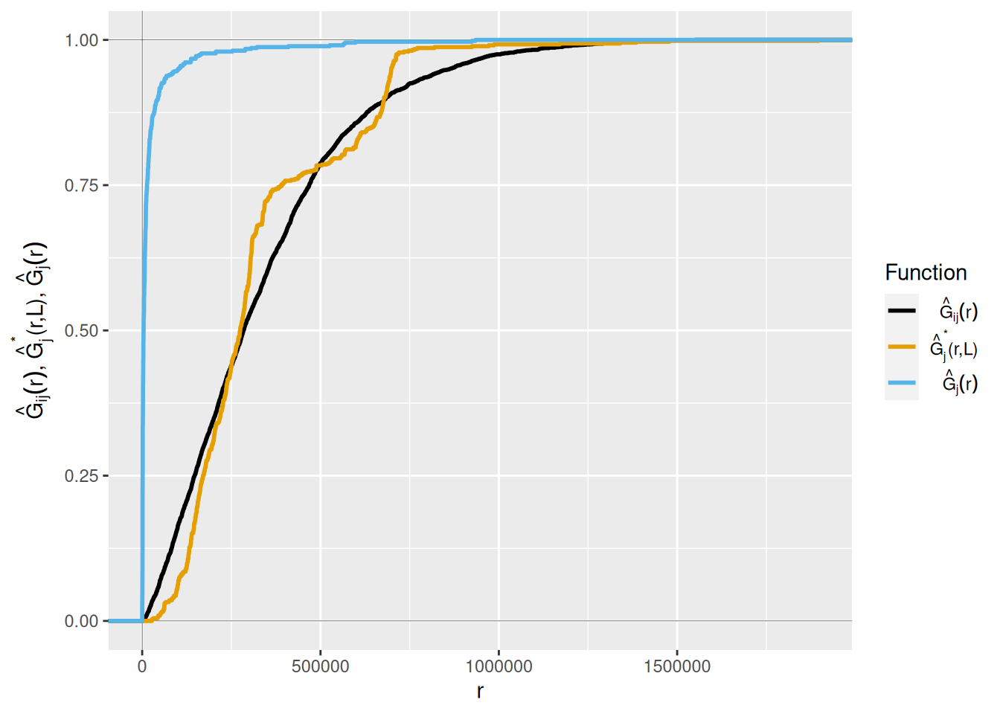
plot(predictors)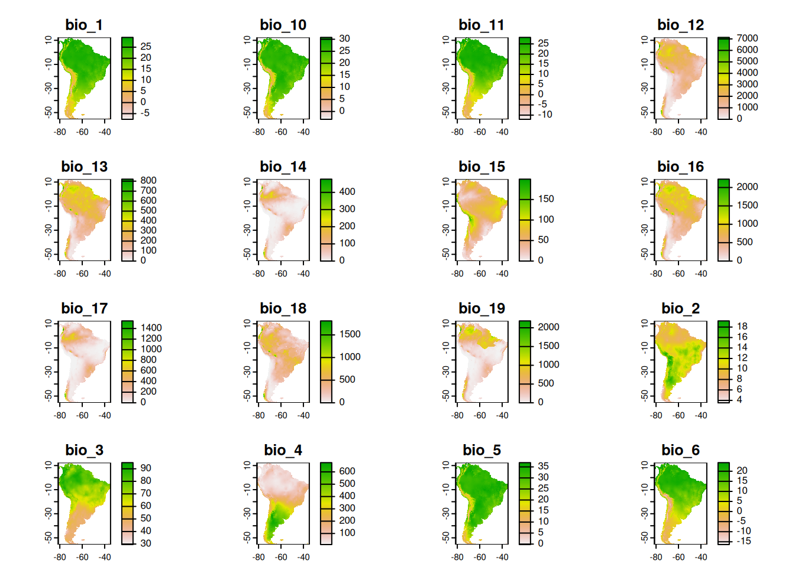
mapview(modeldomain)+mapview(plots, zcol = "fold")RF Model with Random CV
set.seed(1)
rfmodel_rcv = caret::train(x = training_data |> select(all_of(predictor_names)),
y = training_data |> pull(response_name),
method = "ranger",
num.trees = 100,
tuneGrid = expand.grid(splitrule = "variance",
mtry = 2,
min.node.size = 5),
trControl = trainControl(method = "cv",
number = 5,
savePredictions = TRUE),
importance = "permutation")
global_validation(rfmodel_rcv) RMSE Rsquared MAE
27.7546904 0.6080441 15.8630172 plot(varImp(rfmodel_rcv))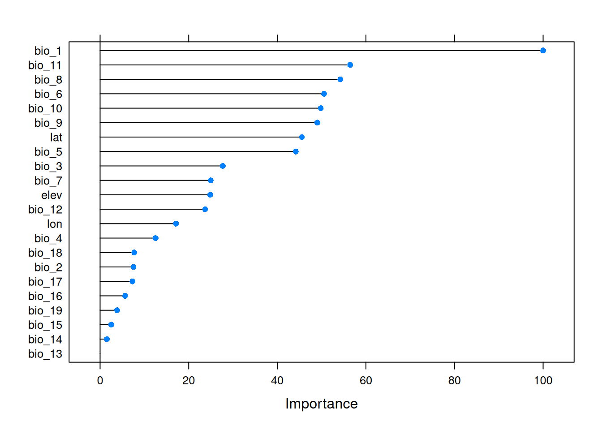
rcv_prediction = predict(predictors, rfmodel_rcv, na.rm = TRUE)
rcv_aoa = CAST::aoa(predictors, rfmodel_rcv)
plot(rcv_aoa)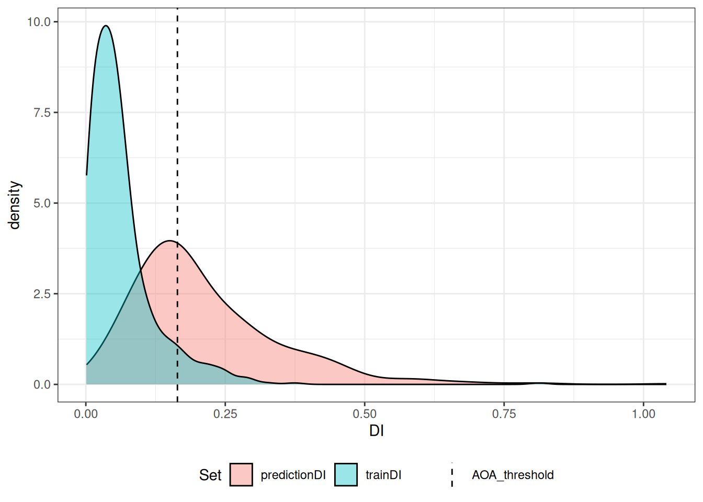
rcv_aoaDI:
class : SpatRaster
dimensions : 816, 560, 1 (nrow, ncol, nlyr)
resolution : 0.08333333, 0.08333333 (x, y)
extent : -81.41667, -34.75, -55.58333, 12.41667 (xmin, xmax, ymin, ymax)
coord. ref. : lon/lat WGS 84 (EPSG:4326)
source(s) : memory
name : DI
min value : 0.002005189
max value : 1.315619437
AOA:
class : SpatRaster
dimensions : 816, 560, 1 (nrow, ncol, nlyr)
resolution : 0.08333333, 0.08333333 (x, y)
extent : -81.41667, -34.75, -55.58333, 12.41667 (xmin, xmax, ymin, ymax)
coord. ref. : lon/lat WGS 84 (EPSG:4326)
source(s) : memory
name : AOA
min value : 0
max value : 1
Predictor Weights:
bio_1 bio_10 bio_11 bio_12 bio_13 bio_14 bio_15 bio_16
1 616.8808 352.0868 387.0742 214.3091 89.22917 97.32893 102.463 118.9647
bio_17 bio_18 bio_19 bio_2 bio_3 bio_4 bio_5 bio_6
1 127.7846 129.9146 109.4352 128.931 235.3114 155.2538 322.2815 355.9702
bio_7 bio_8 bio_9 elev lat lon
1 220.9582 375.3501 347.9632 220.3788 329.6272 179.5749
AOA Threshold: 0.1641971plot(rcv_prediction)
plot(rcv_aoa$AOA)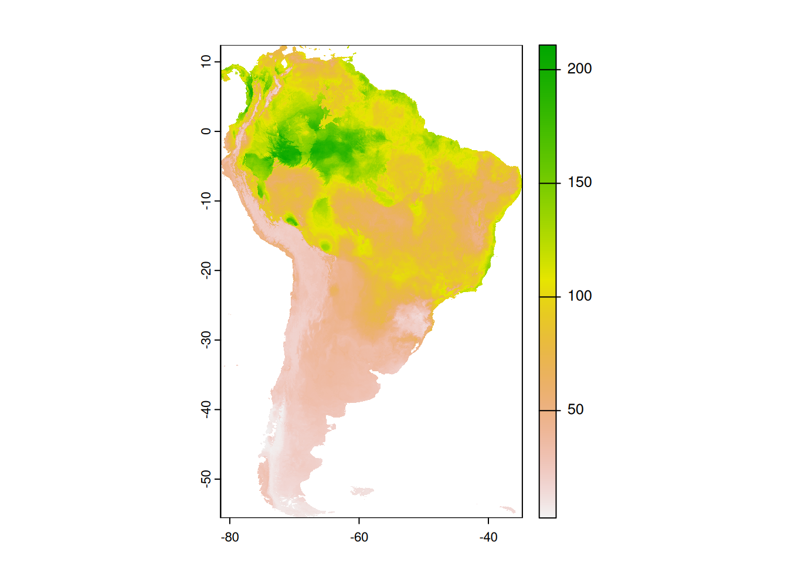
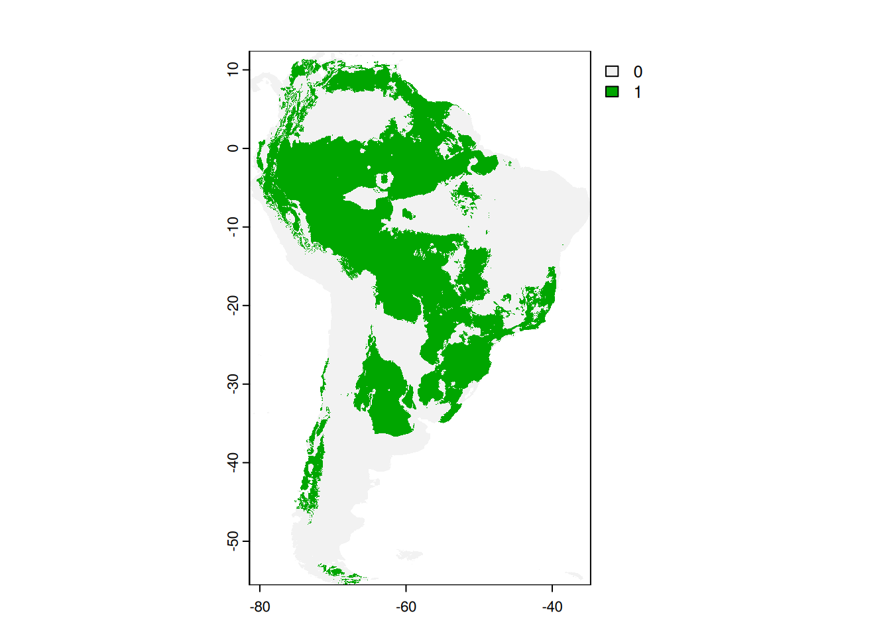
RF Model with Spatial CV
set.seed(1)
rfmodel_scv = caret::train(x = training_data |> select(all_of(predictor_names)),
y = training_data |> pull(response_name),
method = "ranger",
num.trees = 100,
tuneGrid = expand.grid(splitrule = "variance",
mtry = 2,
min.node.size = 5),
trControl = trainControl(method = "cv",
number = 5,
index = knn_setup$indx_train,
indexOut = knn_setup$indx_test,
savePredictions = TRUE),
importance = "permutation")
global_validation(rfmodel_scv) RMSE Rsquared MAE
37.9789531 0.3346944 22.9599761 scv_aoa = CAST::aoa(predictors, rfmodel_scv)
plot(scv_aoa)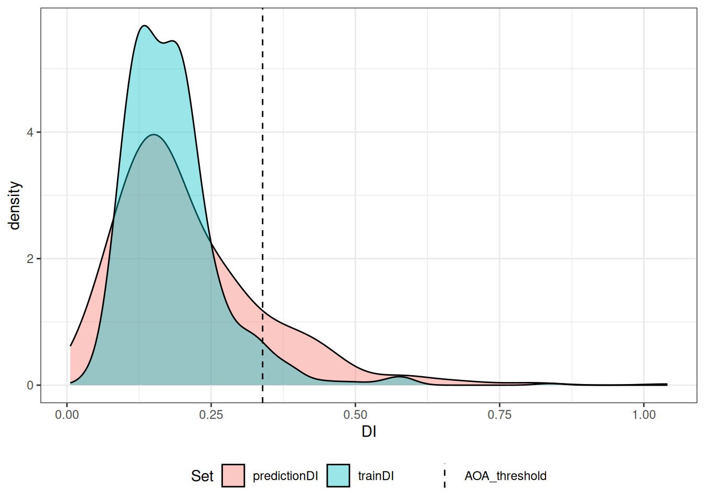
scv_aoaDI:
class : SpatRaster
dimensions : 816, 560, 1 (nrow, ncol, nlyr)
resolution : 0.08333333, 0.08333333 (x, y)
extent : -81.41667, -34.75, -55.58333, 12.41667 (xmin, xmax, ymin, ymax)
coord. ref. : lon/lat WGS 84 (EPSG:4326)
source(s) : memory
name : DI
min value : 0.002005189
max value : 1.315619437
AOA:
class : SpatRaster
dimensions : 816, 560, 1 (nrow, ncol, nlyr)
resolution : 0.08333333, 0.08333333 (x, y)
extent : -81.41667, -34.75, -55.58333, 12.41667 (xmin, xmax, ymin, ymax)
coord. ref. : lon/lat WGS 84 (EPSG:4326)
source(s) : memory
name : AOA
min value : 0
max value : 1
Predictor Weights:
bio_1 bio_10 bio_11 bio_12 bio_13 bio_14 bio_15 bio_16
1 616.8808 352.0868 387.0742 214.3091 89.22917 97.32893 102.463 118.9647
bio_17 bio_18 bio_19 bio_2 bio_3 bio_4 bio_5 bio_6
1 127.7846 129.9146 109.4352 128.931 235.3114 155.2538 322.2815 355.9702
bio_7 bio_8 bio_9 elev lat lon
1 220.9582 375.3501 347.9632 220.3788 329.6272 179.5749
AOA Threshold: 0.3391792plot(scv_aoa$AOA)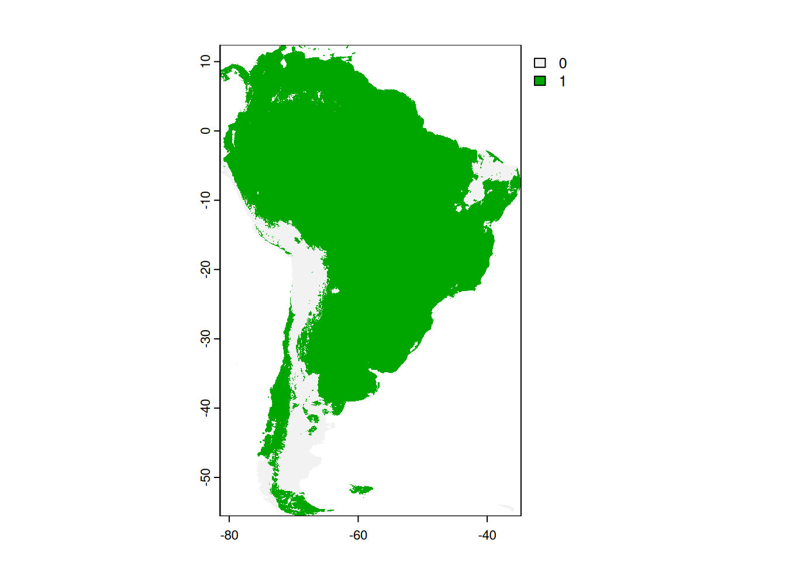
Feature Selection
set.seed(2)
ffs_knncv = CAST::ffs(predictors = training_data |> select(all_of(predictor_names)),
response = training_data |> pull(response_name),
method = "ranger",
num.trees = 100,
minVar = 4,
tuneGrid = expand.grid(splitrule = "variance",
mtry = 2,
min.node.size = 5),
trControl = trainControl(method = "cv",
number = 5,
index = knn_setup$indx_train,
indexOut = knn_setup$indx_test,
savePredictions = TRUE),
importance = "permutation",
verbose = FALSE)
global_validation(ffs_knncv) RMSE Rsquared MAE
34.4356647 0.4037126 21.6800629 ffs_knncv$selectedvars[1] "bio_1" "bio_18" "bio_6" "bio_9" knncv_prediction = predict(predictors, ffs_knncv, na.rm = TRUE)
knncv_aoa = CAST::aoa(predictors, ffs_knncv)plot(knncv_prediction)
plot(knncv_aoa$AOA)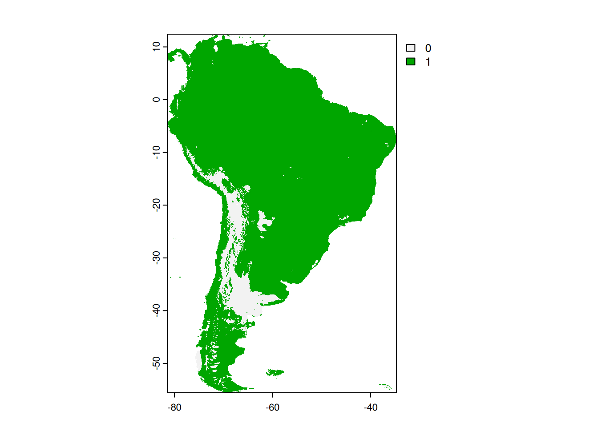
knncv_calib = calibrate_aoa(knncv_aoa, model = ffs_knncv, multiCV = TRUE, length.out = 4)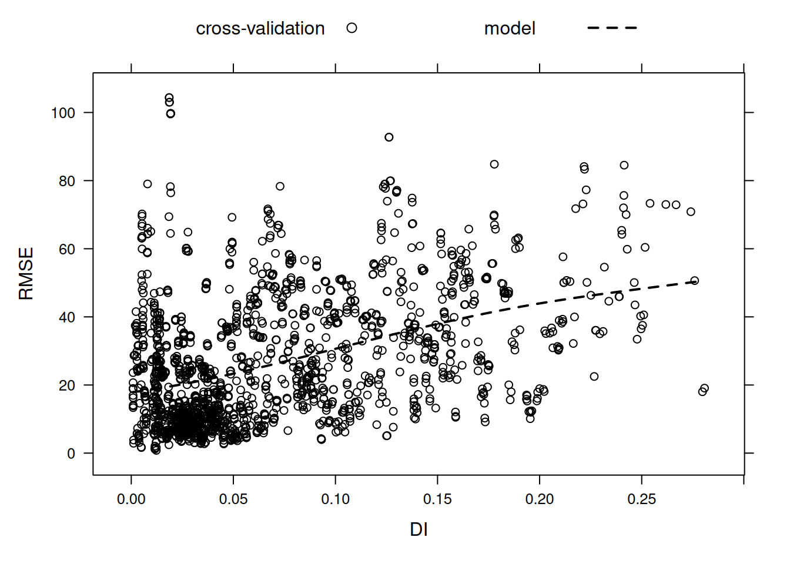
plot(knncv_calib$AOA$expected_RMSE)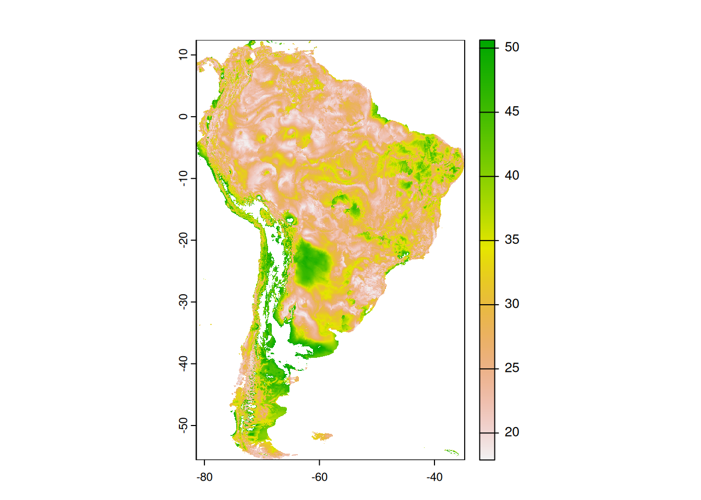